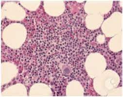

Pure red cell aplasia (PRCA)

CAUSES
Causes of (PRCA) include:
- A parvovirus B19 infection, which may be toxic to the red blood cells starters (or precursors)
- Certain lymphocytic leukemias (blood cancers) such as large granular lymphocytic leukemia (LGLL)
- Thymoma (a tumor of the thymus, which is a lymphoid organ)
- Autoimmune diseases such as rheumatoid arthritis or lupus
- Common variable immunodeficiency (CVID)
SYMPTOMS
Symptoms of (PRCA) include:
- Fatigue
- Breathing difficulty and exercise intolerance
- Dizziness
- Pale skin
- Headaches
DIAGNOSIS
Tests include:
- A reticulocyte count, a measure of young red blood cells, may show that your bone marrow is not producing enough red blood cells.
- Your physician may look for evidence of a parvovirus B19 infection by measuring the DNA of the virus in your blood.
- A computed tomography (CT) scan of the chest may be done to look for a thymoma.
- A lymphocyte count in the blood will show whether or not you have a lymphocyte leukemia that may be causing pure red cell aplasia.
- Measuring the monoclonal proteins in the blood checks the adequacy of the immunosystem.
- A bone marrow aspiration (removing a small amount of the liquid portion of bone marrow through a needle) can confirm the diagnosis if the number of red cell precursors in these samples is too low. A bone marrow biopsy can also test iron overload, which can be a complication in patients who need transfusions.
TREATMENTS
Treatment for PRCA include:
- Corticosteroids
- Immunosuppressive therapy
- Immunoglobulins
- Blood transfusion
- Chelation therapy (treatment of iron overload)
- Removal of the thymus